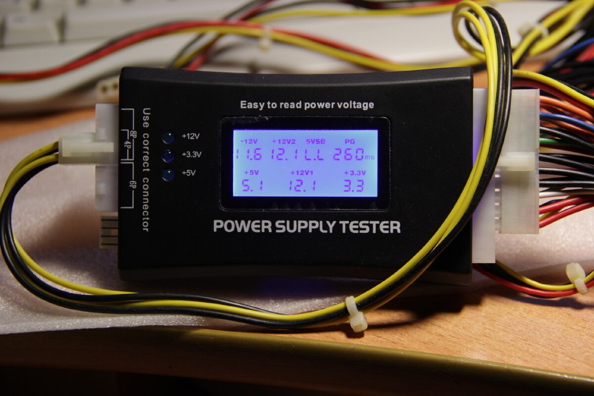

☰
Главная
Список регламентных работ
Справочная информация
Описание устранения неисправностей

Диагностика питания устройства Event Connect
Начать диагностику
Да
Нет
Тех.поддержка
На главную
Причины неисправности питания
1. Проблемы с аккумулятором:
Износ батареи:
Постепенное ухудшение емкости батареи из-за длительного использования.
Некачественная зарядка:
Использование неподходящего зарядного устройства или кабеля может повредить аккумулятор.
Перегрев батареи:
Это часто связано с длительным подключением к зарядному устройству или высоким энергопотреблением.
2. Проблемы с устройством:
Скачки напряжения:
Резкие изменения в электрической сети могут вызвать сбои в системе питания.
Неисправность цепей питания:
Внутренние компоненты могут выйти из строя из-за перенапряжения или физического повреждения.
Плохие контакты:
Ослабленные или окислившиеся соединения в разъемах нарушают питание.
3. Внешние факторы:
Низкое качество источника питания:
Если розетка или внешний аккумулятор неисправны, это влияет на стабильность зарядки.
Погодные условия:
Высокая влажность или экстремальные температуры могут повлиять на работоспособность устройства.